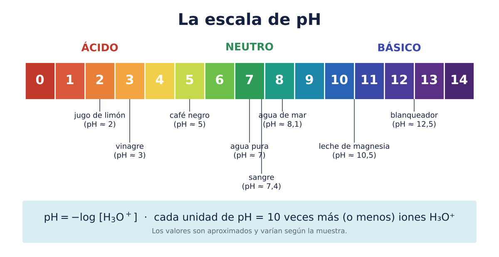
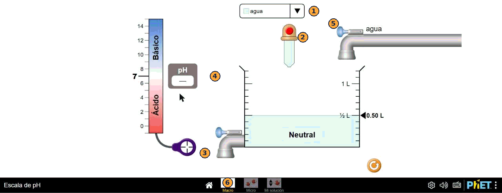
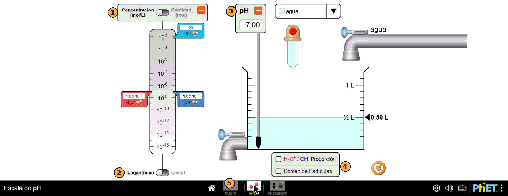
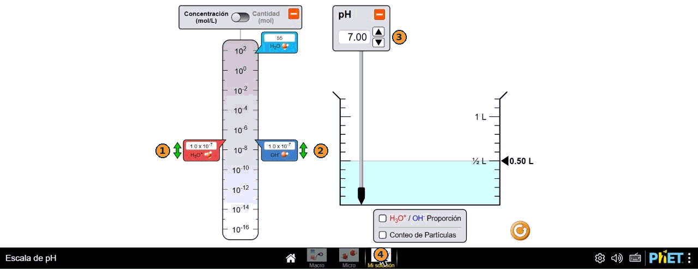

Objetivo y competencias
Objetivo: determinar el pH de líquidos de la vida diaria, relacionarlo con la concentración de iones H3O+ y analizar cómo cambia cuando se diluyen, usando el simulador Escala de pH de PhET.
Tiempo: 1 hora. Trabajo: en parejas.
Materiales: computador o celular con internet, cuaderno y calculadora (con tecla log).
| Saber | Hacer | Ser |
|---|---|---|
| Explica qué mide el pH y la relación entre pH, pOH y las concentraciones de H3O+ y OH−. | Mide el pH de 12 líquidos, calcula concentraciones de iones y predice el efecto de la dilución. | Reconoce la importancia del pH para la salud y el ambiente de su comunidad. |
Para entender: ácidos, bases y pH
Un ácido es una sustancia que, en agua, libera iones hidronio (H3O+, a veces escritos H+); una base libera iones hidróxido (OH−). El agua pura se ioniza muy poco: a 25 °C tiene [H3O+] = [OH−] = 1,0 × 10−7 mol/L. Esos valores se cumplen en el simulador. Su producto es constante:
Kw = [H3O+] · [OH−] = 1,0 × 10−14
Como los números son muy pequeños, se usa el logaritmo:
pH = −log [H3O+] pOH = −log [OH−] pH + pOH = 14

- pH menor que 7: solución ácida (más H3O+ que OH−).
- pH igual a 7: solución neutra (agua pura a 25 °C).
- pH mayor que 7: solución básica o alcalina.
La escala es logarítmica: una unidad de pH equivale a 10 veces más o menos iones H3O+. Una solución de pH 3 tiene 10 veces más H3O+ que una de pH 4 y 100 veces más que una de pH 5.
Ejemplos resueltos
Ejemplo 1. Si [H3O+] = 1 × 10−5 mol/L, entonces pH = −log(10−5) = 5, una solución ácida.
Ejemplo 2. Si pH = 3,5 (jugo de naranja en la simulación), [H3O+] = 10−3,5 = 3,2 × 10−4 mol/L.
Ejemplo 3. Si pH = 11, entonces pOH = 14 − 11 = 3 y [OH−] = 10−3 = 1 × 10−3 mol/L.
¿Por qué importa el pH?
- Salud: la sangre mantiene un pH muy estrecho, entre 7,35 y 7,45. Pequeños cambios son peligrosos.
- Agua: el agua potable suele tener un pH entre 6,5 y 8,5. El agua de lluvia es ligeramente ácida (cercana a 5,6) por el CO2 disuelto, y más ácida aún cuando hay contaminación.
- Suelo y cultivos: cada cultivo prefiere cierto pH del suelo; un suelo muy ácido o muy básico limita la absorción de nutrientes.
- Alimentos y aseo: los alimentos fermentados son ácidos; los jabones y limpiadores son básicos.

Conoce la herramienta: PhET Escala de pH
Abrir en una pestaña nueva: Simulación Escala de pH (PhET) (úsalo si el simulador incrustado no carga o si trabajas desde el celular). ¿Poca señal? Usa la versión sencilla: Escala de pH: Conceptos básicos.
La simulación tiene tres pantallas, que eliges desde el menú de inicio o desde la barra inferior: Macro, Micro y Mi solución.
Pantalla Macro

| N.º | Control | Para qué sirve |
|---|---|---|
| 1 | Selector de líquido | Menú con 12 líquidos: ácido de batería, sangre, sopa de pollo, café, limpiador de desagües, jabón de manos, leche, jugo de naranja, gaseosa, saliva, vómito y agua. |
| 2 | Gotero | Mantén presionado el bulbo rojo para verter el líquido elegido al vaso. |
| 3 | Sonda de pH | Arrástrala dentro del líquido para medir. Debe tocar el líquido o el medidor muestra una raya. |
| 4 | Medidor y escala de pH | El medidor muestra el pH con dos decimales y la flecha lo señala en la escala de 0 (ácido) a 14 (básico), con el 7 marcado. |
| 5 | Grifo de agua | Agrega agua al vaso para diluir lo que contiene. |
| 6 | Pantallas | Barra inferior: Macro, Micro y Mi solución. |
Al elegir otro líquido, el vaso se vacía y se llena con el nuevo. El vaso empieza con 0,50 L de agua (pH 7,00, «Neutral»).
Pantalla Micro

| N.º | Control | Para qué sirve |
|---|---|---|
| 1 | Concentración (mol/L) / Cantidad (mol) | Interruptor para ver la concentración o el número de moles de las especies. |
| 2 | Logarítmico / Lineal | Cambia el eje de la escala. En lineal se ve que las diferencias entre ácidos fuertes y agua son enormes. |
| 3 | Sonda de pH | Mide el pH del líquido; la barra vertical baja dentro del vaso. |
| 4 | Casillas | Proporción H3O+/OH− y Conteo de Partículas muestran cuántas partículas hay de cada ion. |
| 5 | Pantallas | Barra inferior. |
Para agua pura se ve H3O+ = 1,0 × 10−7 mol/L, OH− = 1,0 × 10−7 mol/L y H2O = 55 mol/L.
Pantalla Mi solución

| N.º | Control | Para qué sirve |
|---|---|---|
| 1 | Flechas verdes de H3O+ | Arrástralas para fijar la concentración de H3O+ y mira cómo cambia el pH. |
| 2 | Flechas verdes de OH− | Hacen lo mismo con la concentración de OH−. |
| 3 | Flechas del pH | Fija el pH directamente y mira las concentraciones resultantes. |
| 4 | Pantallas | Barra inferior. |
Simulación «Escala de pH»: PhET Interactive Simulations, Universidad de Colorado Boulder, licencia CC BY 4.0. Ver la página de la simulación
Predice
Escribe tus predicciones antes de abrir la simulación:
Preguntas previas
- Ordena de más ácido a más básico estos líquidos: gaseosa, agua, jabón de manos, café, sangre, leche.
- Si agregas agua a un ácido, ¿el pH sube, baja o no cambia? ¿Hacia qué valor se acerca?
- Si un líquido tiene pH 3 y otro pH 5, ¿cuál tiene más iones H3O+? ¿Cuántas veces más?
Actividad 1: mide el pH de 12 líquidos
Abrir en una pestaña nueva: Simulación Escala de pH (PhET) (úsalo si el simulador incrustado no carga o si trabajas desde el celular).
Meta: medir y clasificar líquidos de la vida diaria.
- Entra a la pantalla Macro.
- En el selector elige el primer líquido de la tabla (ácido de batería). Mantén presionado el gotero hasta que haya líquido en el vaso.
- Arrastra la sonda hasta el líquido. Lee el pH en el medidor y anótalo.
- Cambia de líquido y repite el procedimiento para los 12 líquidos.
- Completa la clasificación: ácido (pH < 7), neutro (pH = 7) o básico (pH > 7).
Responde mientras trabajas
- ¿Cuál fue el líquido más ácido y cuál el más básico?
- ¿Qué líquidos quedaron entre pH 6 y 8? ¿Tienen algo en común?
- ¿Coincidió tu orden de predicción con el de las mediciones? ¿Qué líquido te sorprendió?
Tabla de registro
| Líquido | pH medido | ¿Ácido, neutro o básico? | [H₃O⁺] = 10^−pH (mol/L) |
|---|---|---|---|
| Ácido de batería | |||
| Vómito | |||
| Gaseosa | |||
| Jugo de naranja | |||
| Café | |||
| Sopa de pollo | |||
| Leche | |||
| Agua | |||
| Sangre | |||
| Saliva | |||
| Jabón de manos | |||
| Limpiador de desagües |
Actividad 2: dilución y pH
Meta: explicar qué pasa con el pH cuando se diluye un ácido y una base.
- En la pantalla Macro prepara un vaso con ácido de batería y mide el pH. Anótalo como pH inicial.
- Abre el grifo de agua y agrega agua poco a poco. Mide el pH después de cada adición (por ejemplo, cuando el nivel llegue a 0,25 L, 0,50 L y 1 L).
- Repite con limpiador de desagües (base) y con un líquido de pH intermedio, como el café.
- Responde y compara.
Responde mientras trabajas
- ¿Hacia qué valor se mueve el pH del ácido cuando lo diluyes? ¿Y el de la base?
- ¿Llegó el pH exactamente a 7? ¿Por qué un ácido muy concentrado necesita mucha agua para acercarse a 7?
- Con tus datos, ¿diluir 10 veces un ácido sube el pH una unidad? Explica con [H3O+].
Tabla de registro
| Líquido | Volumen de líquido (L) | Volumen total tras agregar agua (L) | pH medido |
|---|---|---|---|
Actividad 3: mira los iones (Micro y Mi solución)
Meta: relacionar el pH con las concentraciones de H3O+ y OH−.
- Entra a la pantalla Micro. Con agua, anota [H3O+] y [OH−] y verifica que su producto es 1 × 10−14.
- Elige un ácido (por ejemplo, gaseosa) y un líquido básico (jabón de manos). Con la escala logarítmica, anota [H3O+] y [OH−] de cada uno y marca la casilla Proporción H3O+/OH−.
- Cambia a la escala lineal y observa cómo se ve la diferencia entre el agua y un ácido muy concentrado.
- Entra a Mi solución. Con las flechas del pH fija los valores 1, 3, 7, 11 y 13 y anota las concentraciones de H3O+ y OH− que indica el simulador.
Responde mientras trabajas
- ¿Qué pasa con [OH−] cuando [H3O+] aumenta? ¿Se cumple siempre que el producto es 1 × 10−14?
- En un ácido, ¿desaparece por completo el OH−? ¿Qué observas?
- Si el pH baja de 7 a 4, ¿por cuántas veces se multiplica [H3O+]?
Tabla de registro
| pH | [H₃O⁺] (mol/L) | [OH⁻] (mol/L) | pOH | ¿Ácido, neutro o básico? |
|---|---|---|---|---|
| 1 | ||||
| 3 | ||||
| 7 | ||||
| 11 | ||||
| 13 |
Simulación Escala de pH incrustada
Simulación «Escala de pH»: PhET Interactive Simulations, Universidad de Colorado Boulder, licencia CC BY 4.0. Ver la página de la simulación
Valores de referencia
Estos son los valores que marcó la simulación en una medición de prueba. Los tuyos deben ser iguales o muy cercanos; compáralos solo después de medir.

| Líquido | pH | Carácter |
|---|---|---|
| Ácido de batería | 1,0 | Ácido |
| Vómito | 2,0 | Ácido |
| Gaseosa | 2,5 | Ácido |
| Jugo de naranja | 3,5 | Ácido |
| Café | 5,0 | Ácido |
| Sopa de pollo | 5,8 | Ácido |
| Leche | 6,5 | Ligeramente ácido |
| Agua | 7,0 | Neutro |
| Sangre | 7,4 | Ligeramente básico |
| Saliva | 7,4 | Ligeramente básico |
| Jabón de manos | 10,0 | Básico |
| Limpiador de desagües | 13,0 | Muy básico |
Analiza y resuelve
Preguntas de análisis
- Clasifica los 12 líquidos en ácidos, neutros y básicos y explica qué criterio usaste.
- Calcula [H3O+] de una solución con pH 4 y de una con pH 6. ¿Cuántas veces más ácida es la primera?
- Calcula el pH de una solución con [H3O+] = 1 × 10−9 mol/L. ¿Es ácida o básica?
- El HCl 0,10 M es un ácido fuerte. ¿Qué pH tiene? ¿Y el HCl 0,010 M? ¿Qué relación tiene esto con la Práctica 2?
- ¿Por qué una persona no debe tomar un líquido con pH 1 ni con pH 13?
- Si la sangre se vuelve más ácida (pH 7,0 en lugar de 7,4), ¿por cuántas veces aumenta aproximadamente [H3O+]?
- Compara lo que predijiste con lo que mediste. ¿Qué concepto tenías que corregir?
- Ácidos: pH < 7 (ácido de batería, vómito, gaseosa, jugo de naranja, café, sopa de pollo, leche); neutro: agua (7,0); básicos: pH > 7 (sangre, saliva, jabón de manos y limpiador de desagües).
- pH 4 → 1 × 10−4 mol/L; pH 6 → 1 × 10−6 mol/L. La primera es 100 veces más ácida.
- pH = −log(10−9) = 9; es básica.
- HCl 0,10 M → pH = 1; HCl 0,010 M → pH = 2. Al diluir 10 veces (Práctica 2) el pH sube una unidad.
- Los líquidos muy ácidos o muy básicos pueden causar quemaduras químicas en la piel, la boca y el sistema digestivo; además alteran el equilibrio químico del organismo.
- Pasa de 10−7,4 a 10−7,0: aproximadamente 2,5 veces más H3O+ (100,4). Por eso un cambio pequeño de pH en la sangre es grave.
- Respuesta personal: compara la predicción con los datos.
Experimento casero (opcional): indicador de repollo morado
Con un repollo morado puedes hacer tu propio indicador de pH.
- Corta dos hojas de repollo morado en trozos pequeños y hiérvelas 10 minutos con una taza de agua. Deja enfriar y cuela. El líquido morado es tu indicador.
- Coloca un poco de indicador en cuatro vasos transparentes. Agrega a cada uno: vinagre, jugo de limón, agua y una pizca de bicarbonato de sodio disuelta en agua.
- Observa y anota el color de cada vaso. El rojo o rosado indica un medio ácido, el morado un medio neutro y el verde o amarillo un medio básico.
| Vaso | Sustancia | Color observado | ¿Ácido, neutro o básico? |
|---|---|---|---|
| 1 | Vinagre | ||
| 2 | Jugo de limón | ||
| 3 | Agua | ||
| 4 | Bicarbonato disuelto |
No pruebes ninguna mezcla. Lava tus manos al terminar. Haz este experimento con un adulto.
Extensión: titulación en ChemCollective
¿Quieres ir más lejos? En el Laboratorio Virtual de ChemCollective puedes hacer una titulación ácido-base: agregar poco a poco una base de concentración conocida a un ácido hasta que el indicador cambie de color, y así calcular la concentración del ácido.
- Mira primero la demostración oficial: Step-by-Step Demonstration
- Luego abre el laboratorio: ChemCollective Virtual Lab
En la demostración, la concentración de una solución de NaOH se determina con una solución patrón de 0,500 M de biftalato de potasio (KHP) y fenolftaleína. El punto final ocurre cuando aparece un rosado muy claro.
Esta actividad es opcional y suma a tu reto integrador.